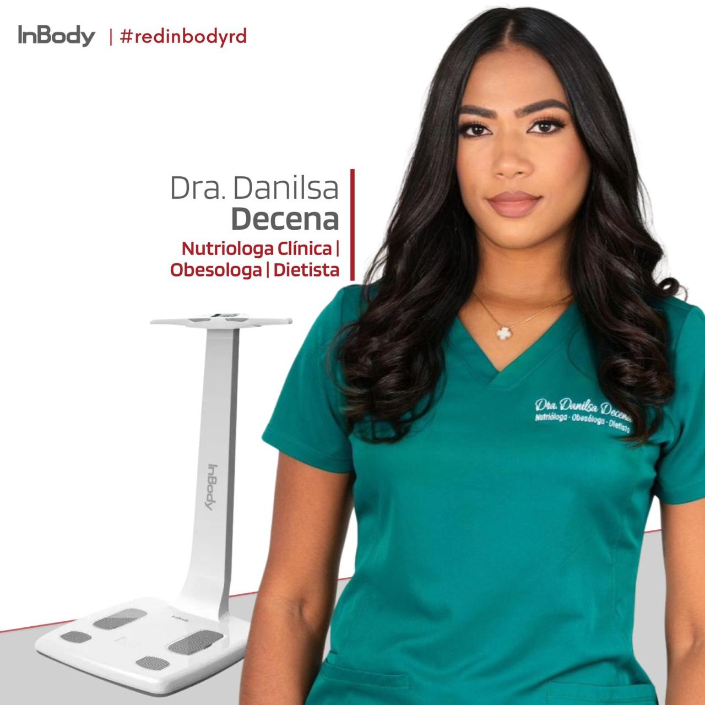
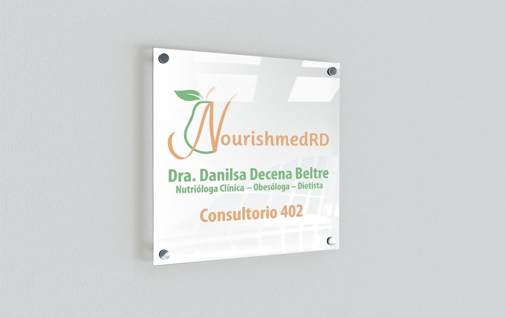
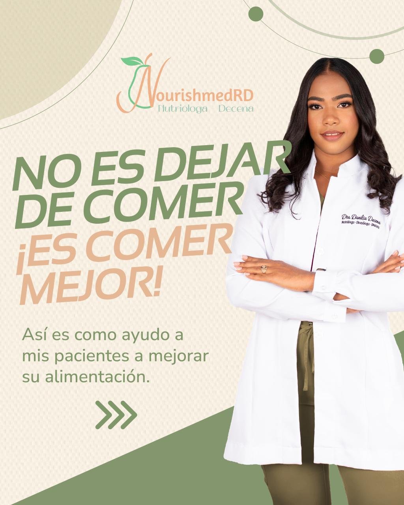
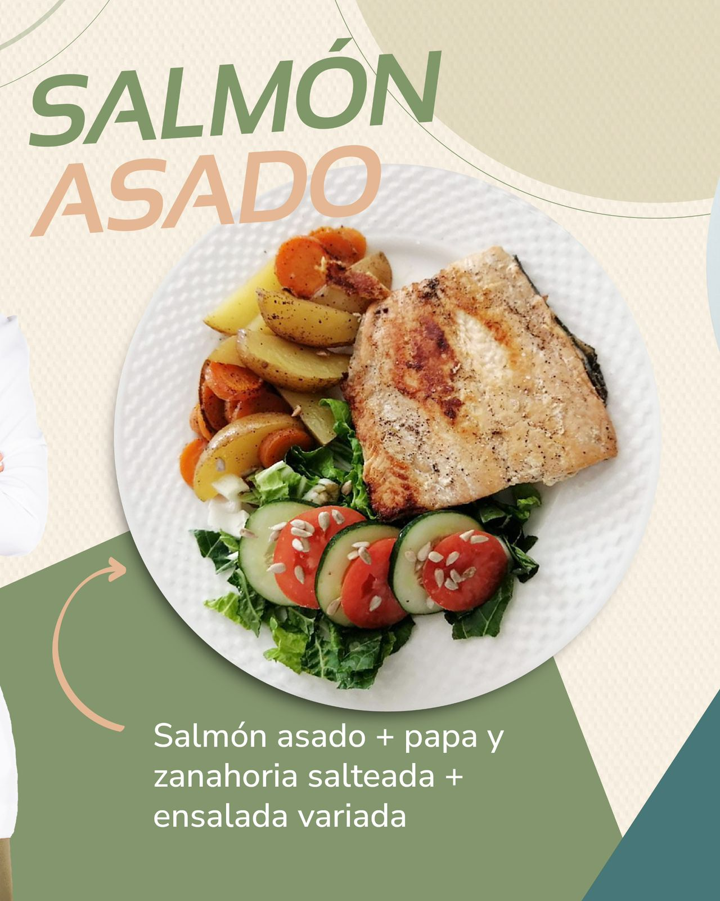

Nutrióloga Clínica | Obesóloga | Dietista
Lunes a viernes: 9:00 am - 7:00 pm Sábados: 9:00 am - 3:00 pm
Dra.decenabeltre@gmail.com




Evaluación completa y plan personalizado según tus objetivos.
Tratamiento integral con enfoque médico y nutricional.
Acompañamiento continuo para lograr resultados sostenibles.